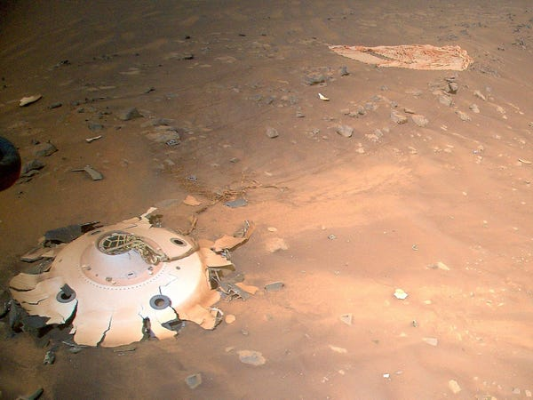

နာဆာ ပညာရှင် တွေက ဒီဓါတ်ပုံကို အနီးကပ် စစ်ဆေး ကြည့်ရှု ကြည့်တဲ့ အခါမှာ ဒီ အမှိုက်ဟာ သတ္တု ရွက်လွှာလေး တစ်ခု ဖြစ်ပြီး အင်္ဂါဂြိုဟ်ဆင်း ယာဉ်တွေ ဆင်းသက်တဲ့ အခါ အပူဒါဏ် ခံနိုင်အောင် အုပ်ထားတဲ့ အပူခံလွှာ (Thermal blanket) က အပိုင်းအစ တစ်ခု ဖြစ်တယ် ဆိုတာကို တွေ့ရှိခဲ့ ကြပါတယ်။
ဒီ သတင်းကို ပြီးခဲ့တဲ့ အင်္ဂါနေ့က Perseverance ယာဉ် ရဲ့ မြေပြင် အဖွဲ့သား တွေက တွစ်တာမှာ ဓါတ်ပုံနဲ့ တကွ တင်ပြ ခဲ့ကြတာ ဖြစ်ပါတယ်။
ရယ်စရာ ကောင်းနေတာ တခုကတော့ ဒီ အပူခံ အလွှာဟာ Perseverance ယာဉ် ဆင်းသက်ချိန်က အ့ပူခံ နိုင်အောင် အသုံးပြုခဲ့တဲ့ အလွှာ ဖြစ်နေတာပဲ ဖြစ်ပါတယ်။
That shiny bit of foil is part of a thermal blanket – a material used to control temperatures. It’s a surprise finding this here: My descent stage crashed about 2 km away. Did this piece land here after that, or was it blown here by the wind? pic.twitter.com/uVx3VdYfi8“ဒါဟာ အံ့ဩစရာ ကောင်းတဲ့ ရှာဖွေ တွေ့ရှိမှုပဲ ဖြစ်ပါတယ်။ ဒီ အစလေးက ဒီနေရာမှာ ပြုတ်ကျ လာတာလား၊ အခြား နေရာကနေ လေတိုက်ပြီး လွင့်လာတာလား” လို့ Perseverance အဖွဲ့သား တွေက မေးခွန်း ထုတ်ခဲ့ ကြပါတယ်။
— NASA’s Perseverance Mars Rover (@NASAPersevere) June 15, 2022
ဒါဟာ စူးစမ်းရေးယာဉ် ရဲ့ တစ်ခုတည်းသော အမှိုက်တော့ မဟုတ်ပါဘူး။ ပြီးခဲ့တဲ့ ဧပြီလ တုန်းကလဲ ဒီ စူးစမ်းရေး ရိုဗာ ကို သယ်ဆောင် ဆင်းသက်ခဲ့တဲ့ အင်္ဂါဂြိုဟ် ဆင်းယာဉ် ပျက်ကျထား တာကို ဓါတ်ပုံရိုက် ပို့ပေး ခဲ့ပါသေးတယ်။
အင်္ဂါဂြိုဟ် ပေါ်ကို လူသားတွေ စေလွှတ်တဲ့ လေ့လာရေး ယာဉ်တွေ တစ်စီးပြီး တစ်စီး ရောက်ရှိ လာတာနဲ့ အတူ လူလုပ် အမှိုက်တွေလဲ တနေ့တခြား တိုးပွားလို့ လာနေတာကို တွေ့ကြရ ပါတယ်။
ဒီလို အင်္ဂါဂြိုဟ် ပေါ်မှာ လူလုပ် အာကာသ အမှိုက် (space junk) တွေ များလာတာဟာ တကယ်တော့ စိုးရိမ်စရာ ကောင်းပါတယ်။

ကမ္ဘာပတ် လမ်းကြောင်း ထဲမှာဆိုလဲ ယခုအခါ ဂြိုဟ်တု အသစ်တွေ၊ အဟောင်းတွေ၊ ဂြိုဟ်တုပျက်က ကျန်ခဲ့တဲ့ အပိုင်းအစ တွေနဲ့ ပြည့်သိပ်လို့ နေပါပြီ။ ဒီ အာကာသ အမှိုက်တွေကြောင့် သိပ်မကြာမီ ကာလမှာ ကမ္ဘာကနေ အာကာသထဲ တက်ရောက် ရတာဟာ အတော်လေး အန္တရာယ် ကြီးမားတဲ့ စွန့်စားမှုကြီး တစ်ခု ဖြစ်လာနိုင် ပါတယ်။
ဒီလို အန္တရာယ်တွေ ရှိပေမယ့် အခုထိ အာကာသတွင်း ညစ်ညမ်းမှုကို ကာကွယ်ဖို့ အများ သဘောတူတဲ့ “အာကာသ ဥပဒေ စည်းမျဉ်းစည်းကမ်း” တွေ မရှိကြသေးပါဘူး။
အခုထိ အများ လက်ခံ ကျင့်သုံး နေတာက ၁၉၆၇ ခုနှစ်က သဘောတူ ခဲ့တဲ့ “ပြင်ပ အာကာသ သဘောတူညီချက် (Outer Space Treaty)” ပဲ ဖြစ်ပါတယ်။ ဒီ သဘော တူညီချက်မှာ အာကာသ ညစ်ညမ်းမှုက ကာကွယ်ရေး အတွက် လိုက်နာရမယ့် အချက်တွေကို ဘာမှ ရေရေရာရာ ရေးထားတာ မရှိပါဘူး။
ဒီ သဘောတူညီချက် လက်မှတ်ရေးထိုး အပြီး ရာစုနှစ်ဝက်လောက် အကြာမှာ အင်္ဂါဂြိုဟ် ပေါ်မှာ လူလုပ် အမှိုက်တွေ စုပုံလို့ လာနေပါပြီ။ ဒါပေမယ့် ဒီ သဘောတူညီ ချက်က ဒီ အမှိုက် ပြဿနာကို ဘာမှ ဖြေရှင်း ပေးနိုင်စွမ်း မရှိ ဖြစ်နေပါတယ်။
Ref: NASA’s Perseverance rover captured images of its own litter, and it shows how Mars is becoming a junkyard